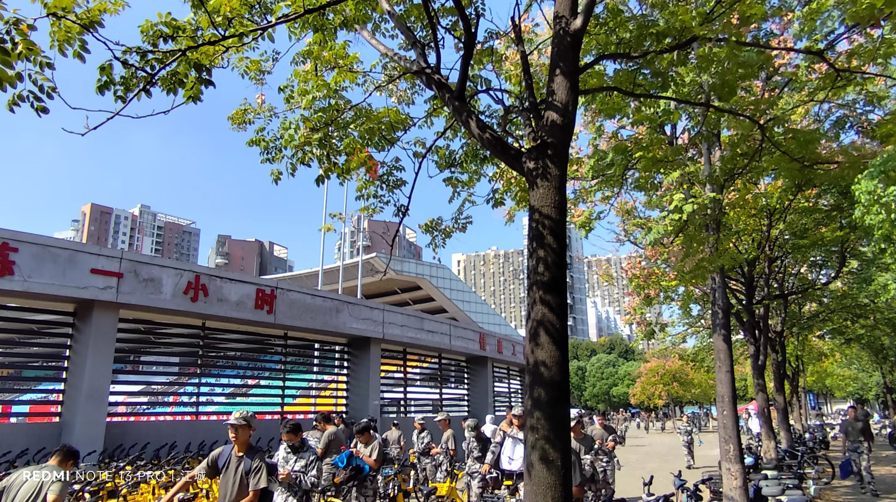
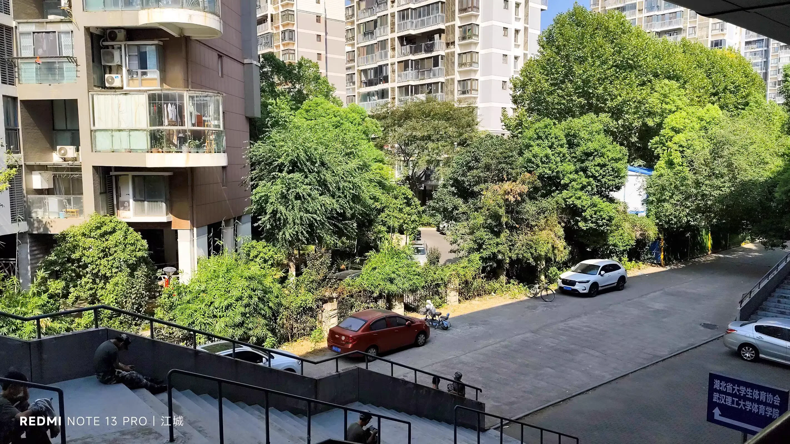
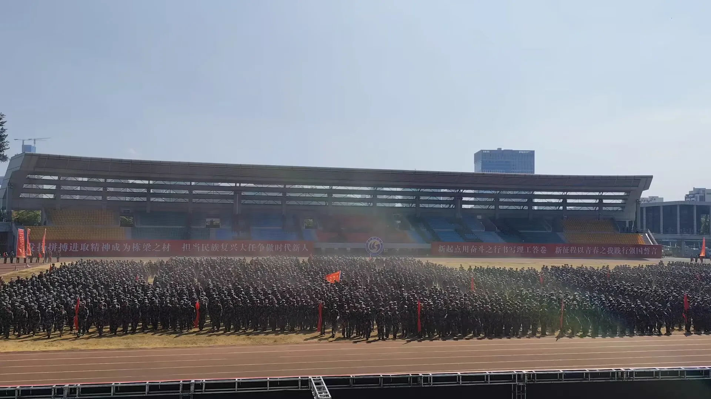
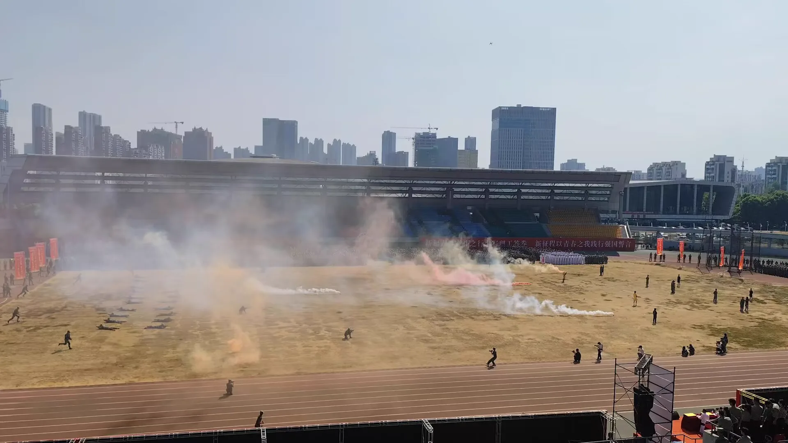
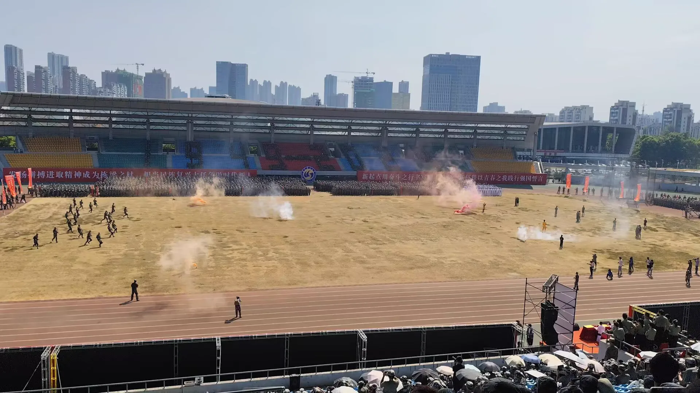
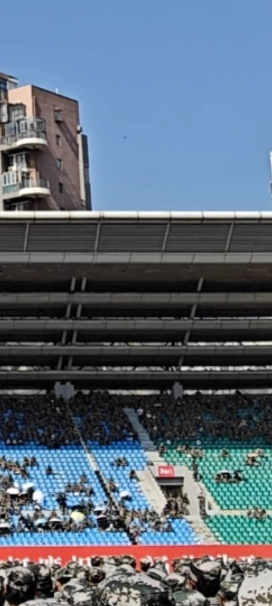
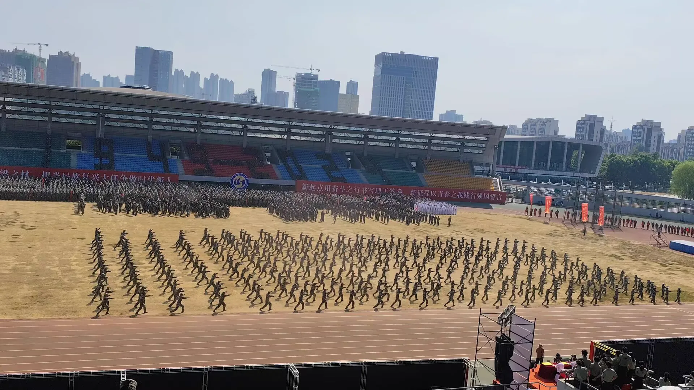
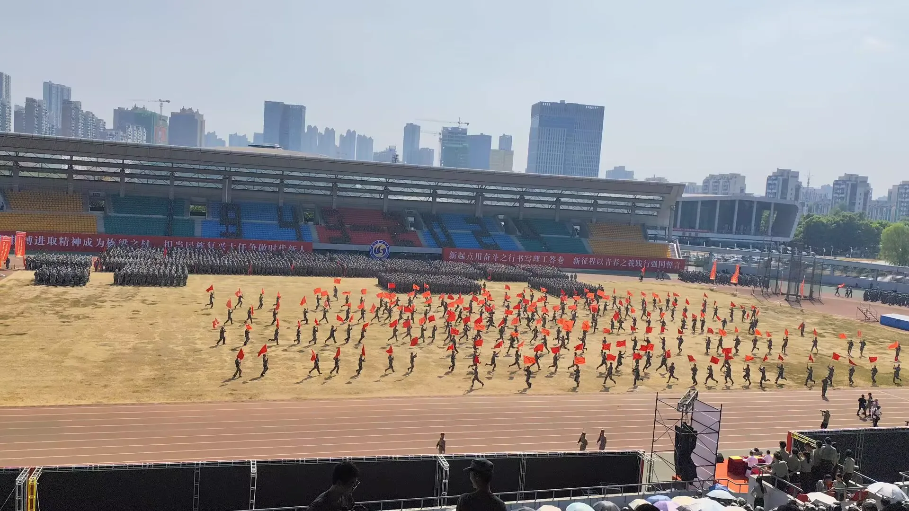
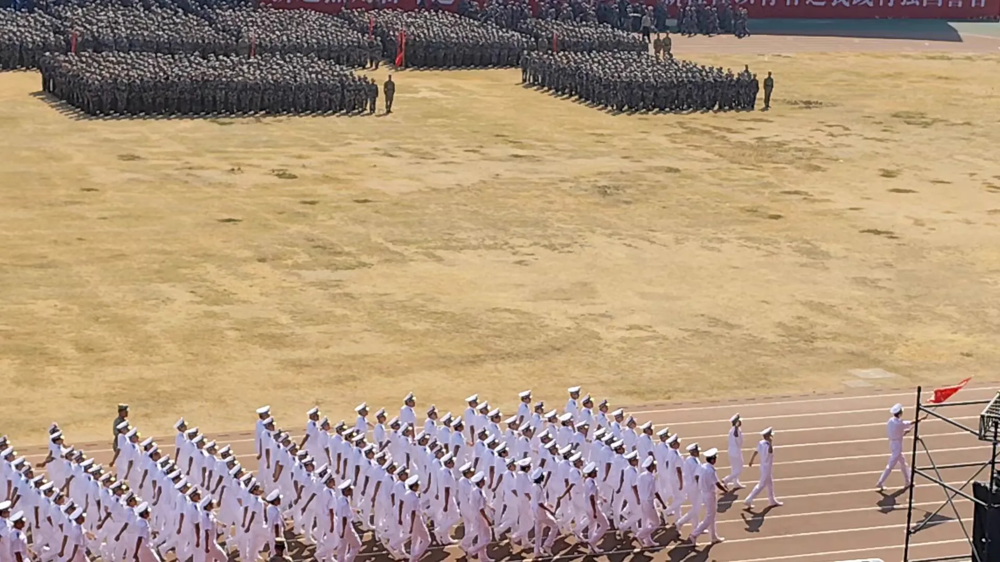
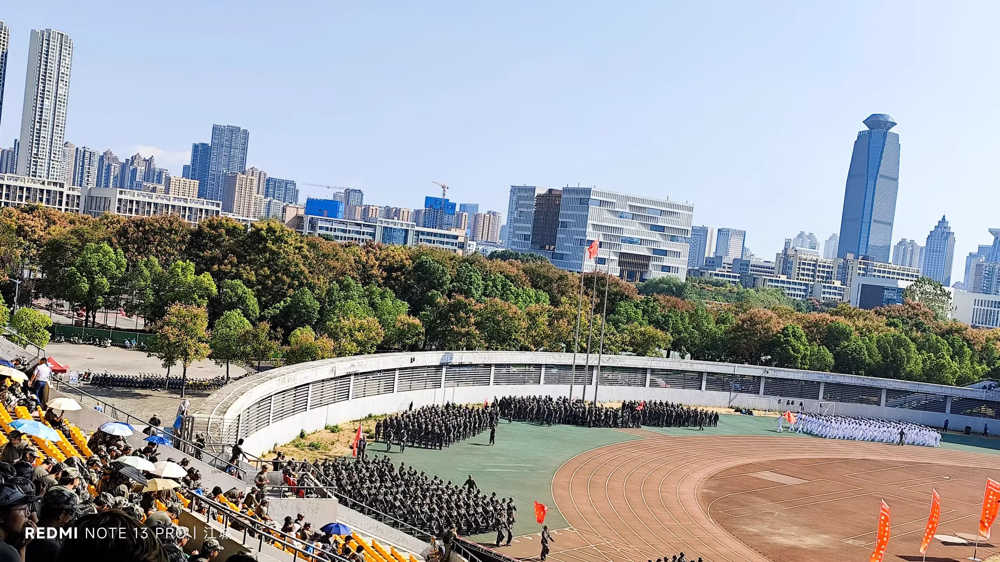

Journal · 2024-09-28
湖北省武汉市
2024年9月28日 12:35
从东湖到南湖， 虽有清早之奔驰， 却无风尘之劳苦。










Sep 28, 2024 12:35
From East Lake to South Lake, though there was a swift early-morning ride, there was none of the weariness of the road.
28 sept. 2024 12:35
Du lac de l'Est au lac du Sud, malgré la course du petit matin, point de fatigue du voyage.
28.09.2024 12:35
Vom Donghu-See zum Nanhu-See, trotz des morgendlichen Eilens keine Mühsal der Reise.